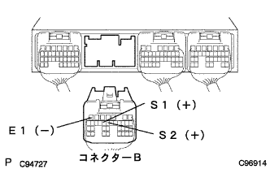

DTC P0753/62 S1 Solenoid system |
DTC P0758/63 S2 Solenoid system |
| symbol | Operating state |
| ○ | Power of power |
| × | Non -powered state |
| - | Failure |
| → | Change in Fail Safe |
| Shift position | S1 | S2 | Gear position |
| D -range | ○ | ○ | First -speed |
| ↑ | ○ | × | 2nd gear |
| ↑ | × | × | 3rd gear |
| ↑ | × | ○ | 4th gear |
| 2 range | ○ | ○ | First -speed |
| ↑ | ○ | × | 2nd gear |
| L range | ○ | ○ | First -speed |
| Shift position | S1 | S2 | Gear position |
| D -range | - | ○ → × | 3rd gear |
| ↑ | - | × | 3rd gear |
| ↑ | - | × | 3rd gear |
| ↑ | - | ○ | 4th gear |
| 2 range | - | ○ → × | 3rd gear |
| ↑ | - | × | 3rd gear |
| L range | - | ○ → × | 3rd gear |
| Shift position | S1 | S2 | Gear position |
| D -range | ○ | - | 2nd gear |
| ↑ | ○ | - | 2nd gear |
| ↑ | × | - | 3rd gear |
| ↑ | × | - | 3rd gear |
| 2 range | ○ | - | 2nd gear |
| ↑ | ○ | - | 2nd gear |
| L range | ○ | - | 2nd gear |
| Shift position | S1 | S2 | Gear position |
| D -range | - | - | 3rd gear |
| ↑ | - | - | 3rd gear |
| ↑ | - | - | 3rd gear |
| ↑ | - | - | 3rd gear |
| 2 range | - | - | 3rd gear |
| ↑ | - | - | 3rd gear |
| L range | - | - | 3rd gear |
| DTC No. | DTC detection conditions
| Inspection site |
| P0753/62 |
|
|
| P0758/63 |
|
|

| Step 1 | Transmission wire single inspection (S1/S2) |
Cut the transmit sho -young wire connector.
 |
Use a Toyota Electrical Tester to measure resistance between each terminal.
| Terminal number (terminal symbol) | Resistance value [ω] |
| 5 (S1) ← → Body Earth | 11-15 (20 ° C) |
| 10 (S2) ← → Body Earth | 11-15 (20 ° C) |
|
| ||||
| OK | |
| Step 2 | Wire harness and connector inspection (transmission wire-engine control computer) |
Attach the transmit sho -wire wire connector and separate the connector B of the engine controlled compilation.
|  |
Use a Toyota Electrical Tester to measure resistance between each terminal.
(The terminal array isreference)
| Terminal number (terminal symbol) | Resistance value [ω] |
| B15 (S1) ← → B7 (E1) | 11-15 (20 ° C) |
| B14 (S2) ← → B7 (E1) | 11-15 (20 ° C) |
|
| ||||
| OK | ||
| ||
| Step 3 | Transmission Solenoid ASSY Single Inspection (S1/S2) |
Use a Toyota Electrical Tester to measure the resistance between the solenoid terminal and the body.
|
| ||||
| OK | ||
| ||